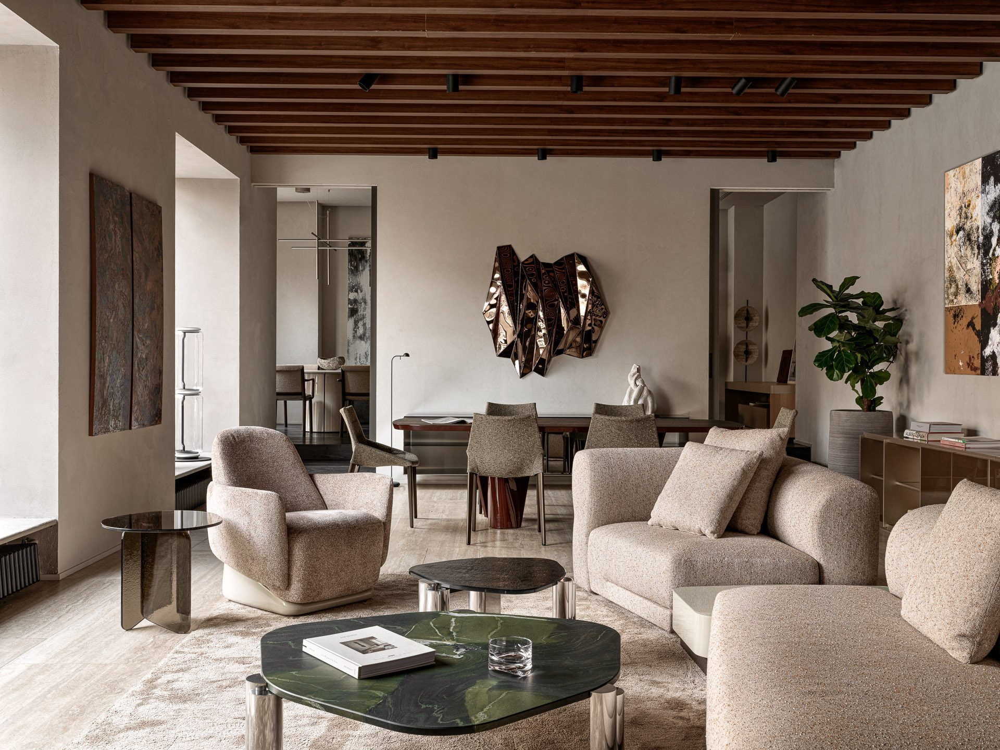
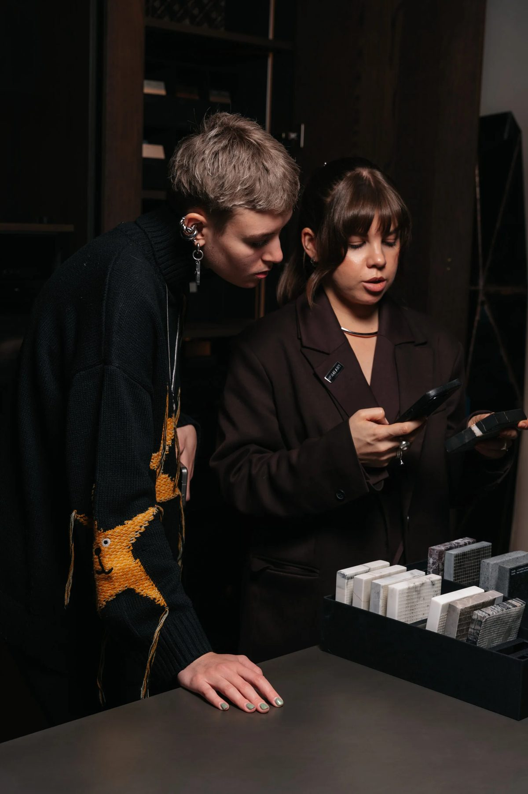
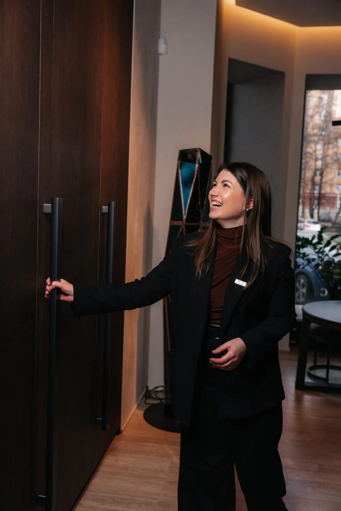
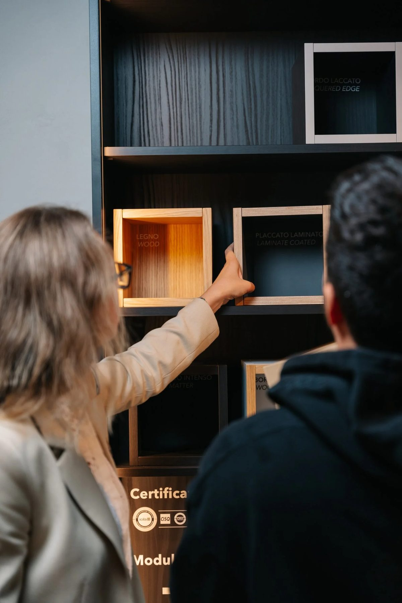
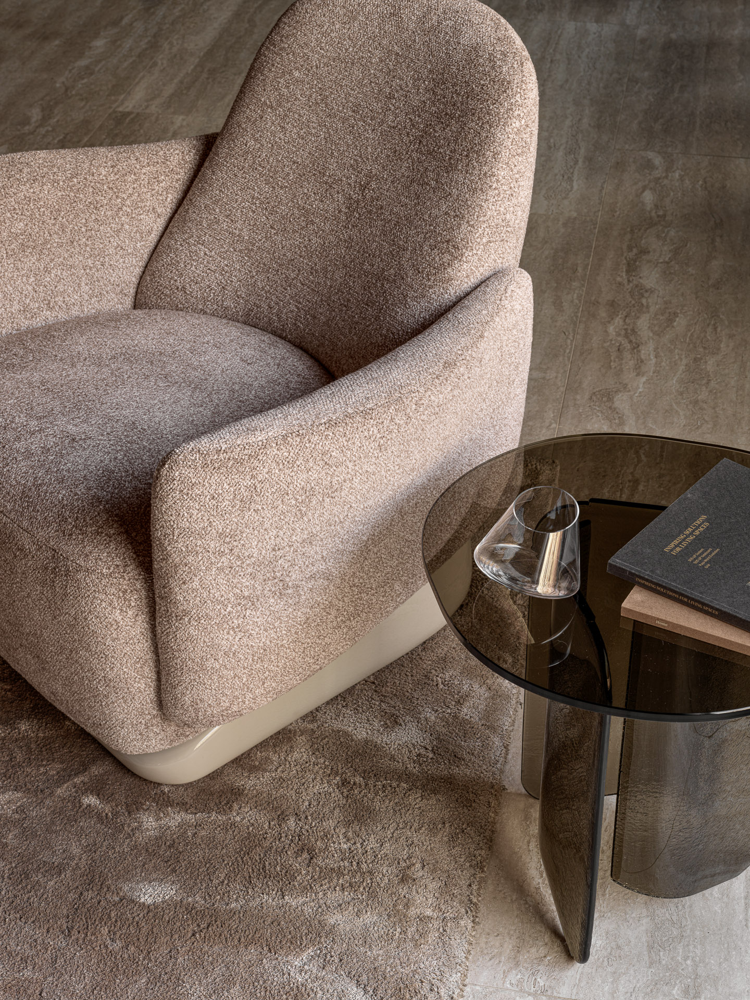

Шоурум как представительский центр
Законченные жилые зоны, где проект можно увидеть вживую и обсудить с клиентом.
Пространство для ваших встреч

Шоурум HOMEART на 3-й Фрунзенской — пространство, которым дизайнеры и архитекторы могут пользоваться для встреч с клиентами и партнёрами, презентации проектов и обсуждения важных решений.

Здесь интерьер раскрывается как жилая среда: гостиная, кухня, столовая и библиотека позволяют увидеть, как материалы, свет, мебель и пропорции работают вместе. Домашняя атмосфера располагает к диалогу и помогает спокойно обсуждать детали проекта, выбирать решения и представлять будущий интерьер.

Команда HOMEART поможет подготовить встречу, подобрать образцы и подключится к обсуждению, чтобы поделиться экспертизой и ответить на вопросы по проекту.
Приходите с клиентом — остальное подготовим
Встреча с клиентом
Выберите время: подготовим зону и образцы, подключим экспертов по нужным фабрикам. Для обсуждения деталей есть отдельная переговорная.
Вопрос по проекту
Расскажите о задаче — подскажем фабрики и решения ещё до визита, чтобы встреча прошла предметно.
Образцы к встрече
Привезём отделки, ткани и материалы нужных фабрик к вашему визиту.

Будем рады увидеть вас
в шоуруме HOMEART
